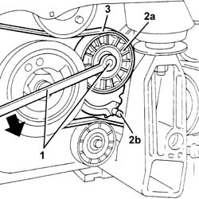
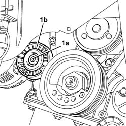
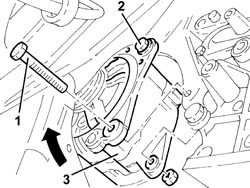
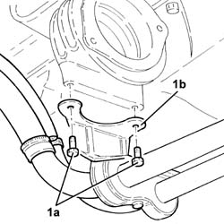
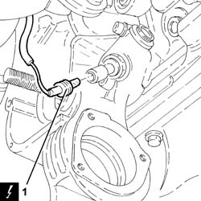
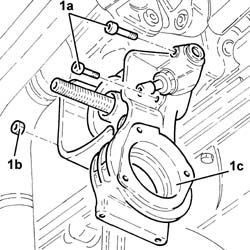

2710A37 oil filter mount/intermediate drive shaft bearing - r+r
- Path
- Procedures > 27 AXLE > 2710 FRONT AXLE > 2710A drive shafts and joints > 2710A37 oil filter mount/intermediate drive shaft bearing - r+r
- Kind
- repair procedure (removal / refitting; the operation number is the code)
- Applies to
- engines: 2.5 V6; all production periods
- Interactive page
- https://sloeber94.github.io/elrnDB-a156/en/#/3238026
Applies to: engines: 2.5 V6; all production periods
 Removing
Removing
 Refitting
RefittingPosition the vehicle on the ramp.
Ensure that the ignition key is in the stop OFF, then disconnect the battery negative terminal.
 | Name | Connector |
|---|---|---|
- | Battery |
Proceed with the removal 4450B12 front or rear wheels (two) - r+r .
Proceed with the removal 7055B64 Engine compartment DUST shield in front wheel arch (one), left or right - R.R. (Right and left sides).
Proceed with the removal 7055B54 under-engine guard - r r .
Proceed with the removal 1076B52 exhaust pipe (one) leaving l/h or r/h exhaust manifold - r + r .
Proceed with the removal 1084C10 Air DUCT for engine oil cooling radiator - R.R . .
1. Loosen the engine components single drive belt tension adjusting the belt tensioner.
2. Lock the tensioner (2a) with the belt slack inserting a suitable peg (2b).
3. Prise off the single engine component drive belt.

Applies to: engines: 2.5 V6; all production periods
1. Undo the bolt (1a) and remove the fixed single drive belt tensioner (1b).

Applies to: engines: 2.5 V6; all production periods
1. Undo the lower alternator fixing bolt.
2. Loosen the upper alternator fixing bolt.
3. Turn the alternator upwards using the upper bolt as a fulcrum.

Applies to: engines: 2.5 V6; all production periods
1. Undo the bolts (1a) securing the power steering system pipe bracket (1b).

Applies to: engines: 2.5 V6; all production periods
1. Disconnect the electrical connection from the engine oil pressure warning light switch.
| Name | Connector |
|---|---|---|
1 | Engine oil pressure sensor |

Applies to: engines: 2.5 V6; all production periods
1. Undo the bolts (1a) and nuts (1b) and remove the intermediate drive shaft oil filter/bearing support (1c).
Remove the gasket.

Applies to: engines: 2.5 V6; all production periods
Refitting
RemovingRefit the engine oil filter/intermediate drive shaft mount, complete with a new gasket, and secure with the bolts and nuts.
Connect the electrical connection to the engine oil pressure warning light switch.
Tighten the bolts securing the power steering system pipe mounting bracket.
Place the alternator back in its housing and secure it using the bolts.
Place the engine components single drive belt fixed tensioner back in its housing and fix it tightening the bolt to the recommended torque.
 | Fastening | Component | Ø | Value (daNm) |
|---|---|---|---|---|
- | Bolt | FIXED SINGLE SERVICE BELT TENSIONER | M8 | 1.7 ÷ 2.1 |
Fit the single drive belt.
Adjust the single engine component drive belt moving tensioner until the retaining pin slides out.
Proceed with the refitting 1084C10 Air DUCT for engine oil cooling radiator - R.R . .
Proceed with the refitting 1076B52 exhaust pipe (one) leaving l/h or r/h exhaust manifold - r + r .
Proceed with the refitting 7055B54 under-engine guard - r r .
Proceed with the removal 7055B64 Engine compartment DUST shield in front wheel arch (one), left or right - R.R. (Right and left sides).
Proceed with the refitting 4450B12 front or rear wheels (two) - r+r .
Connect the battery terminal (-).
Refill the engine oil lubrication system 1084A10 ENGINE OIL - Check level and top up, if necessary .
Refill the manual gearbox and differential 2110A04 Manual gearbox and differential OIL - Check level and top up, if necessary .
Remove the car from the ramp.
Topics linked from this page (9)
- 1076B52 exhaust pipe (one) leaving l/h or r/h exhaust manifold - r + r
- 1084A10 ENGINE OIL - Check level and top up, if necessary
- 1084C10 Air DUCT for engine oil cooling radiator - R.R .
- 2110A04 Manual gearbox and differential OIL - Check level and top up, if necessary
- 4450B12 front or rear wheels (two) - r+r
- 7055B54 under-engine guard - r r
- 7055B64 Engine compartment DUST shield in front wheel arch (one), left or right - R.R.
- A1B Battery ( BATTERY NEGATIVE )
- K30 Engine oil pressure sensor (switch)